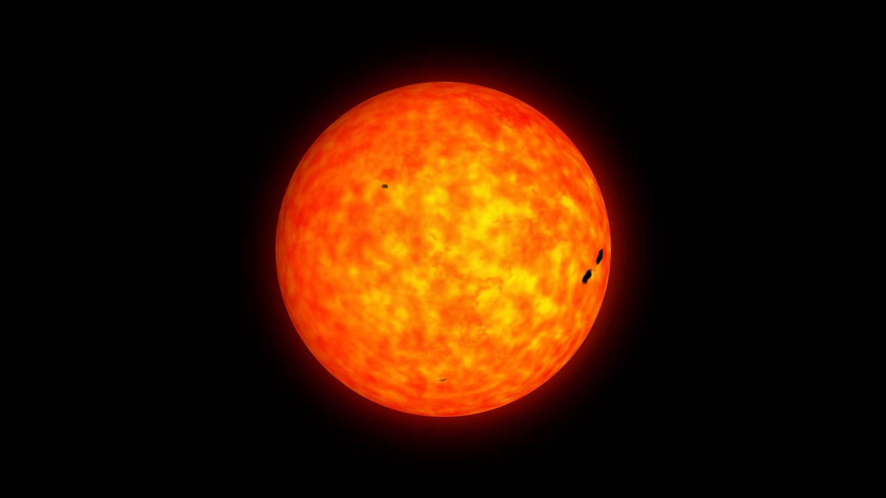

Myth of the Six Sisters
In the beginning there was nothing. The universe was but an empty void. When the divine beings came to the void, it became like an endless playground for them. They sought to fill this new universe and so entrusted the task to six angelic sisters, deemed worthy by their mastery of the elements. The angels agreed to use their talents to the god's ends and set forth to fill the great void.
The Sister of Fire created massive glowing orbs of flame which came to be the stars in the sky. The Sister of Water fashioned large worlds entirely from water and ice. The Sister of Air fabricated gas giants and streamed bright nebulae like silken fabric in the darkness. The Sister of Earth produced many rocky bodies in the void, especially asteroids and moons. The Sister of Light spread her life-giving power throughout the universe and fabricated various light-producing bodies such as suns, comets, nebulae, and meteors with her sisters. The Sister of Darkness generated black holes in the void to clean up the vast space and worked with the other sisters as well to glue their works together with gravity so that they might not crash into each other.
The process was long and hard, but the sisters worked together tirelessly to fill the great void of the universe with many different and beautiful objects. The divine beings were pleased with their progress. Eventually, their eyes were caught on one fiery orb in particular which spun and circled about one of the many suns. The ball of flame was so beautiful that they commended the Sister of Fire for her work on it. They dubbed this sphere the Garun'she, a word in the language of the gods meaning "beauteous gem".
The other Sisters, however, were jealous of the Sister of Fire. They wanted to claim this precious gem for themselves. The Sister of Earth struck the first blow and coated Garun'she in thick rock, soil, and rare metals. It glimmered beautifully and was now her work. The Sister of Water was next, covering most of the rock with the freshest of her water. It too sparkled exquisitely in the light of the sun. The Sister of Air then coated the aquatic gem with her finest air, swirling winds, and puffy clouds. It too was very appealing. The Sister of Light gave it magic and put it directly in the light of her sun. The new presentation was certainly the most praiseworthy of their actions so far.
However, the Sister of Darkness had her own plans. Since she could not create something so lovely and steal the credit for herself, she threatened to absorb the entirety of Garun'she into a black hole. All the Sisters came together and instead they quarreled over the gem that they had each tried to lay claim. The divine powers were furious when they heard their task was delayed by a petty squabble. To punish the Sisters for the misdeed of sullying and plotting to destroy Garun'she, their powers were weakened and they were imprisoned together within the largest mountain of the new world they had created.
The divine beings then set to work finishing the task that the Sisters had begun. They tried their best to replicate Garun'she in their work, but they never managed to forge a world quite nearly as perfect as their beauteous gem. Instead they all swore to protect the true Garun'she and guard it from harm until the universe was no more.